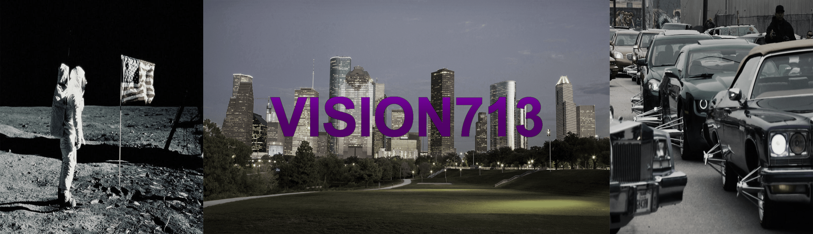
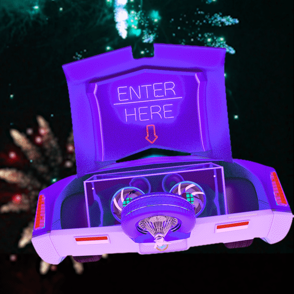
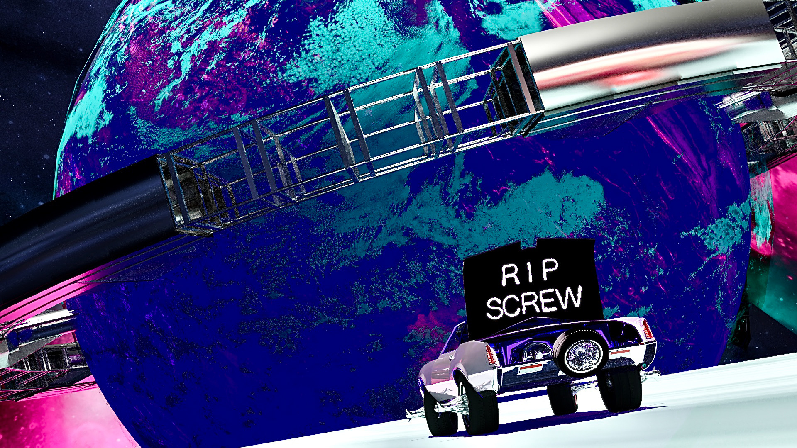
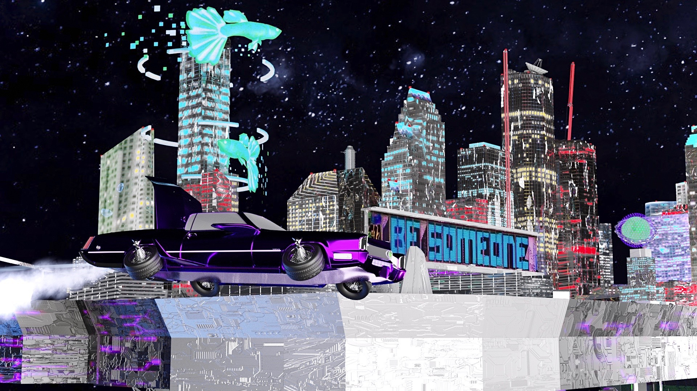

<!DOCTYPE html>
<html lang="en">
<head>
<!-- Global site tag (gtag.js) - Google Analytics -->
<script async src="https://www.googletagmanager.com/gtag/js?id=UA-143925420-1"></script>
<script>
  window.dataLayer = window.dataLayer || [];
  function gtag(){dataLayer.push(arguments);}
  gtag('js', new Date());

  gtag('config', 'UA-143925420-1');
</script>
<title>VISION713</title>
<link href="css/newStyle.css" rel="stylesheet" type="text/css">
<meta charset="utf-8">
<meta name="viewport" content="width=device-width, initial-scale=1">
<style>
    body {
        background-color: black;
        margin: 0;
        font-family: 'Exo+2', sans-serif;
        text-align: center;
        color: white;
    }

    * {
        box-sizing: border-box;
    }
</style>
</head>
<script>
function goBack() {
  window.history.back();
}
</script>
<style>
<body>
<a href="https://llmaze3.github.io" class="button">Home</a>
<header>
  
</header>

<section>
    <h1>IG: </h1>
    <h1><u>Developers</u></h1>
    <a href="mailto:llopow3@gmail.com?Subject=Vision713" target="_top" style="font-size:20px">Lloyd Powell</a>
    <a href="mailto:James.H.Rhodes.19@dartmouth.edu?Subject=Vision713" target="_top"style="font-size:20px" >James Rhodes</a>
    <h1><u>Technology</u></h1>
    <p>Unity Maya Blender Xcode Adroid Studios Github</p>
 <article>
    
    
    
    <h1 style="text-align:center">Vision</h1>
    <p>Our goal is to provide a mobile augmented reality application that combines Houston’s “Space City” theme influenced by NASA and Houston’s hip-hop scene of the 90s lead by Dj Screw and the Screwed Up Click.
      Some of these elements include: astronaunts, nice cars, and great music. These elements and many more are still deeply rooted in the city to this day.</p>
    <p>The app is an augmented reality music visualizer application that doesn’t require a headset. It’s in-app functionalities also use researched psychotherapy methods to prevent opioid use.</p>
    <p>Vision713 will introduce a growing technology to an audience that is both old and young, by using nostalgic themes of a region that has expanded internationally over the years</p>
    <p>We, the creators, are currently seeking money to help support the project. Our objective is to purchase more 3-D models to reduce the time and stress for developer to ensure the app is production ready in minimal amount of time.</p>
  </article>

</section>

<footer>
  <h1>VISION713. Coming to a mobile device store near you.</h1>
</footer>

</body>
</html>
